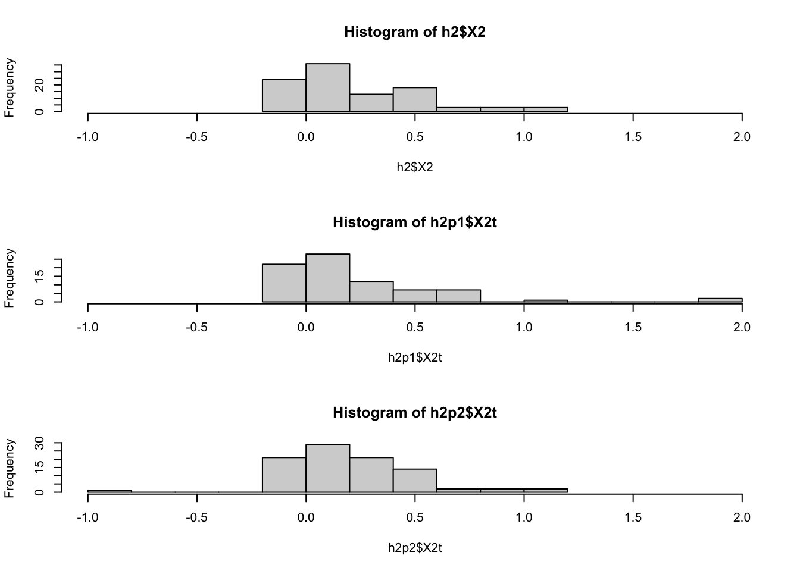

## ── Attaching packages ───────────────────────────────────── tidyverse 1.3.0 ──## ✓ ggplot2 3.3.2 ✓ purrr 0.3.4
## ✓ tibble 3.0.3 ✓ dplyr 1.0.2
## ✓ tidyr 1.1.1 ✓ stringr 1.4.0
## ✓ readr 1.3.1 ✓ forcats 0.5.0## ── Conflicts ──────────────────────────────────────── tidyverse_conflicts() ──
## x dplyr::filter() masks stats::filter()
## x dplyr::lag() masks stats::lag()h2 = read_tsv(glue::glue("{DATA}/vgvp.txt"),col_names = FALSE)## Parsed with column specification:
## cols(
## X1 = col_character(),
## X2 = col_double(),
## X3 = col_double()
## )h2p1 = read_tsv(glue::glue("{DATA}/vgvp_perm.txt"),col_names = FALSE)## Parsed with column specification:
## cols(
## X1 = col_character(),
## X2 = col_double(),
## X3 = col_double()
## )h2p2 = read_tsv(glue::glue("{DATA}/vgvp_perm2.txt"),col_names = FALSE)## Parsed with column specification:
## cols(
## X1 = col_character(),
## X2 = col_double(),
## X3 = col_double()
## )dim(h2)## [1] 100 3dim(h2p1)## [1] 79 3dim(h2p2)## [1] 92 3summary(h2$X2)## Min. 1st Qu. Median Mean 3rd Qu. Max.
## -0.086611 0.005914 0.107115 0.225480 0.411777 1.066195summary(h2p1$X2)## Min. 1st Qu. Median Mean 3rd Qu. Max.
## -0.07780 -0.02123 0.09334 0.43573 0.36534 12.64227summary(h2p2$X2)## Min. 1st Qu. Median Mean 3rd Qu. Max.
## -42.34265 0.00481 0.12064 -0.24615 0.36172 1.19819h2p1$X2t = pmax(pmin(h2p1$X2,2), -1)
h2p2$X2t = pmax(pmin(h2p2$X2,2), -1)
par(mfrow=c(3,1))
hist(h2$X2,xlim=c(-1,2))
hist(h2p1$X2t,xlim=c(-1,2))
hist(h2p2$X2t,xlim=c(-1,2))
par(mfrow=c(1,1))